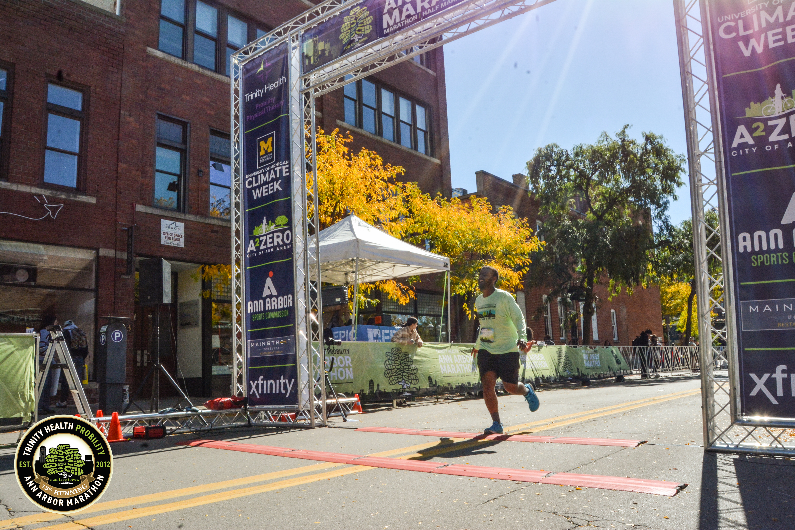
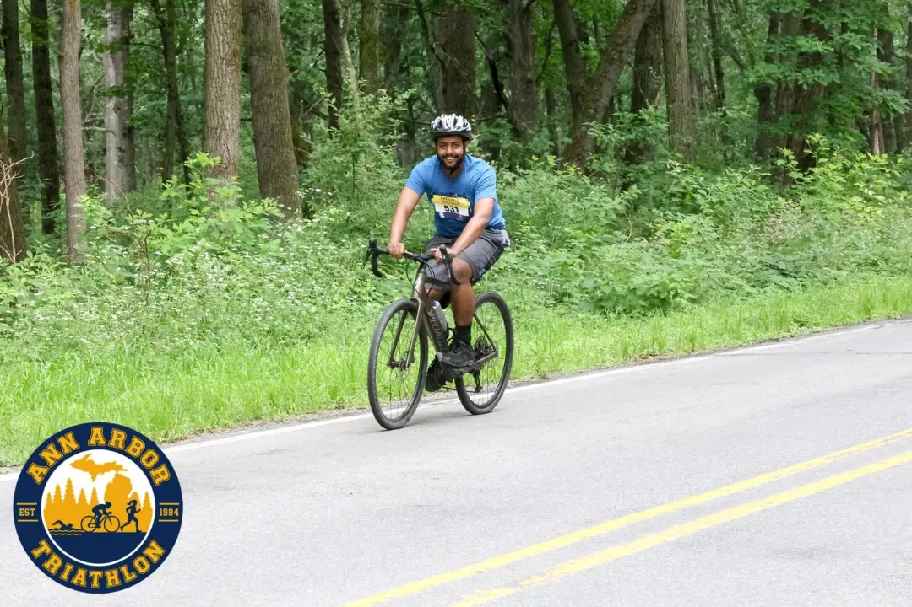

I have many hobbies!


 My longest-running hobby is chess. I have played on and off since I was seven or eight
years old, and for a few years I played professionally in Ethiopia. These days I lean more toward
lighter multiplayer board games, but chess still holds a special place in my heart.
My longest-running hobby is chess. I have played on and off since I was seven or eight
years old, and for a few years I played professionally in Ethiopia. These days I lean more toward
lighter multiplayer board games, but chess still holds a special place in my heart.
 I also really enjoy volleyball, although I'm not very good at it, probably because I
started relatively late. Still, it is a sport you can improve at any age, and seeing my
own progress since I started has been wonderful. See if you can spot me in the picture.
I also really enjoy volleyball, although I'm not very good at it, probably because I
started relatively late. Still, it is a sport you can improve at any age, and seeing my
own progress since I started has been wonderful. See if you can spot me in the picture.

I have a few other hobbies I won't go into in detail:
- Music: I enjoy learning instruments, including piano, Ethiopian drums, and the harp, and I practice traditional singing.
- Reading: I like reading to expand my knowledge of technology, world politics, economics, and physics, and to understand how things work. In general, I love learning new skills.
- Languages: I am currently learning German and Ge'ez, an ancient Ethiopian language with no living native speakers.
Finally, my most beloved hobby is watching movies. I watch films of every genre from many different countries.
Thank you for taking the time to get to know me.